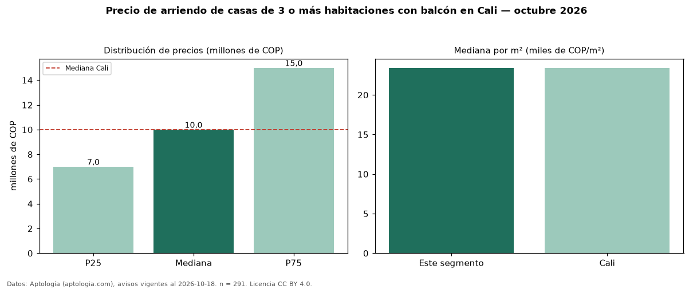

Precio de arriendo de casas de 3 o más habitaciones con balcón en Cali — octubre 2026
Con 291 avisos vigentes, el canon mediano de casas de 3 o más habitaciones con balcón en arriendo en Cali es COP 10 millones al mes. Prácticamente coincide con la mediana de las casas de 3 o más habitaciones en arriendo de Cali (COP 10 millones, n = 558); este segmento reúne el 52 % de esos avisos. Por metro cuadrado, la mediana es COP 23.392/m² al mes (n = 285), 0 % por debajo de las casas de 3 o más habitaciones en arriendo de Cali (COP 23.398/m²). El área mediana anunciada es 425 m². La administración mediana declarada es COP 1,33 millones al mes (n = 41), aparte del canon. La mitad central de los avisos va de COP 7,00 millones a COP 15 millones (razón 2,1), una dispersión alta. El estrato más frecuente es 6 (57 % de los avisos con estrato). La mediana de todas las casas en arriendo de Cali es COP 10 millones (+0 % de diferencia). Datos: Aptología (aptologia.com), CC BY 4.0 — https://www.aptologia.com/arriendo/cali. Archivos: PDF, CSV con las cifras y gráfica PNG.

| Avisos únicos | 291 |
|---|---|
| Percentil 25 | COP 7.000.000 |
| Mediana | COP 10.000.000 |
| Percentil 75 | COP 15.000.000 |
| Mediana por m² | COP 23.391 |
Fuente: avisos vigentes de portales inmobiliarios recopilados por Aptología, deduplicados (mínimo 30 avisos únicos por celda). Precios pedidos, no cerrados. Fecha: 2026-10-18.